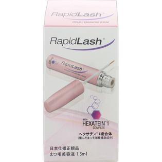
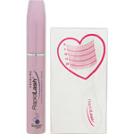

返回列表
产品名称：ラピッドラッシュ

ベリタス販売 ラピッドラッシュ １．５ｍｌ
メーカー ベリタス販売
JANコード 0786563138434
商品の特徴
まつ毛専用美容液
成分・分量
水、BG、ヒドロキシエチルセルロース、イソプロピルクロプロステネート、ヒアルロン酸、オクタペプチド-2
用法及び用量
夜の洗顔後、ラピッドラッシュのブラシで、上まつ毛の根本に、目頭から目尻に向けて塗ってください。ご使用前には目の周りにメイク製品やアイクリーム等、何も使用しないで下さい。